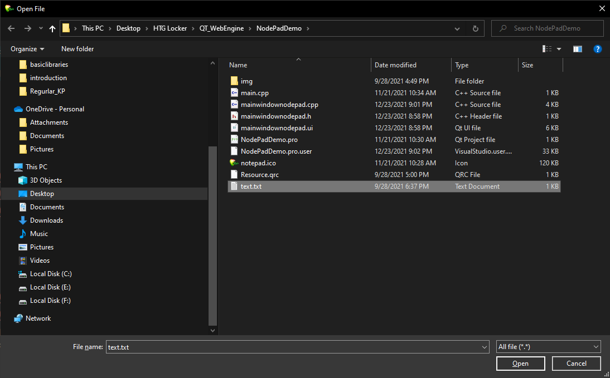

Trong các ứng dụng, bạn thường phải thực hiện các hành động tiêu chuẩn: mở và lưu tệp, đặt thuộc tính phông chữ, chọn màu, v.v. Qt chứa các thành phần triển khai các hộp thoại tiêu chuẩn tương ứng.
Các thành phần hộp thoại chính được liệt kê trong bảng.
|
Thành phần |
Sự miêu tả |
|
QFileDialog |
Lớp hộp thoại chọn tên tệp để mở hoặc lưu |
|
QFontDialog |
Lớp hộp thoại "Phông chữ" - lựa chọn các thuộc tính phông chữ |
|
QColorDialog |
Lớp hộp thoại "Màu" - lựa chọn màu |
|
QPrintDialog |
Lớp hộp thoại "In" |
|
QProgressDialog |
Một lớp hộp thoại trực quan hóa tiến trình của các hoạt động chạy dài |
|
QInputDialog |
Một lớp cho phép bạn yêu cầu người dùng cho một giá trị đơn giản. |
Hộp thoại chọn tệp được thiết kế để chọn một hoặc nhiều tệp, cũng như các tệp nằm trên máy tính từ xa và hỗ trợ khả năng đổi tên tệp và tạo thư mục. Lớp QFileDialog cung cấp việc triển khai hộp thoại chọn tệp và chịu trách nhiệm tạo và chạy ba hộp thoại cùng một lúc. Một trong số chúng cho phép bạn chọn một tệp để mở, thứ hai là để chọn đường dẫn và tên của tệp để lưu nó, và thứ ba là để chọn một thư mục. Lớp QFileDialog có nguồn gốc từ lớp QDialog . Định nghĩa của nó nằm trong tệp
Ví dụ:
void MainWindowNodePad::on_actionOpen_triggered()
{
QString filter = "All file (*.*) ;; File (*.txt*);;File (*.cpp*)";
QString file_name = QFileDialog::getOpenFileName(this,"Open File","C:/Users/PHANQUANGDAN/Desktop/HTG Locker/QT_WebEngine/NodePadDemo",filter);
QFile file(file_name);
if(!file.open(QFile::ReadOnly | QFile::Text)){
QMessageBox::warning(this,"My Warning","File is not open !!!");
return;
}
QTextStream in(&file);
QString text = in.readAll();
ui->textEdit->setText(text);
file.close();
}
Hộp thoại sẽ hiển thị:
Lớp này cung cấp các phương thức tĩnh sau:
getOpenFileName () - Tạo một hộp thoại chọn tệp duy nhất. Phương thức này trả về một QString chứa tên và đường dẫn của tệp đã chọn;getOpenFileNames () - Tạo hộp thoại chọn nhiều tệp. Trả về danh sách các chuỗi kiểu QStringList chứa đường dẫn và tên tệp;
getSaveFileName () - Tạo hộp thoại lưu tệp. Trả về tên tệp và đường dẫn trong một biến chuỗi kiểu QString;
getExistingDirectory () - tạo một cửa sổ lựa chọn thư mục. Phương thức này trả về một QString chứa tên và đường dẫn của thư mục đã chọn;